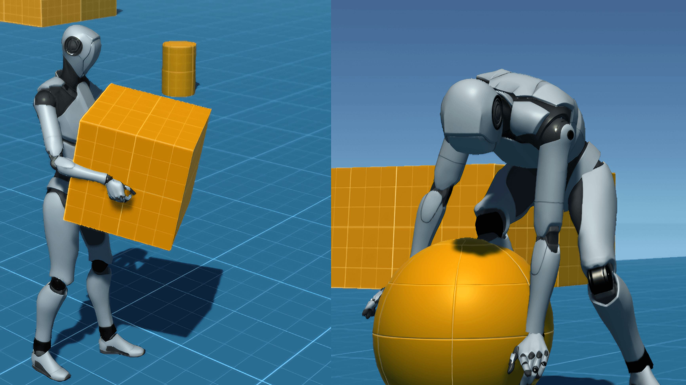
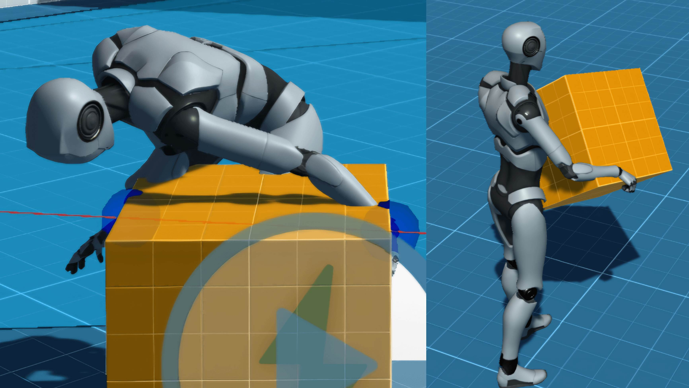

Procedural Hands (IK)
IK Hands is an advanced object-holding mechanism inspired by the smooth interaction system in Little Nightmares. Players can seamlessly grab, hold, and throw objects with realistic hand positioning and animations. Built using Unity's Animation Rigging system and inverse kinematics.


🧠 Core Features
- Grab any object with procedurally animated IK hands
- Smooth throwing and dropping mechanics with realistic physics
- Dynamic hand positioning that adapts to object size and shape
- Customizable finger animations for different object types
- Intelligent object detection system with nearest-object selection
- Direction-aware grabbing based on player orientation
🧩 Technologies Used
📜 About the Mechanism
This system utilizes cross product calculations to dynamically determine left and right grab points from the object's collider center. Raycasts are performed from these calculated positions, which adjust automatically based on the player's orientation relative to the object. Unity's Animation Rigging package provides the foundation for realistic hand placement and finger articulation, creating natural-looking interactions regardless of object dimensions.
💡 Challenges
- Calculating dynamic grab positions based on player direction using cross product mathematics
- Creating smooth hand transitions when interacting with objects of varying sizes and shapes
- Implementing accurate hand rotation based on raycast hit normals for natural surface contact
- Synchronizing lean-in and grabbing animations to ensure timing matches player input
- Optimizing IK solver performance for real-time interaction without frame drops
🎮 Availability
Available as an open-source project on GitHub for developers and Unity enthusiasts.